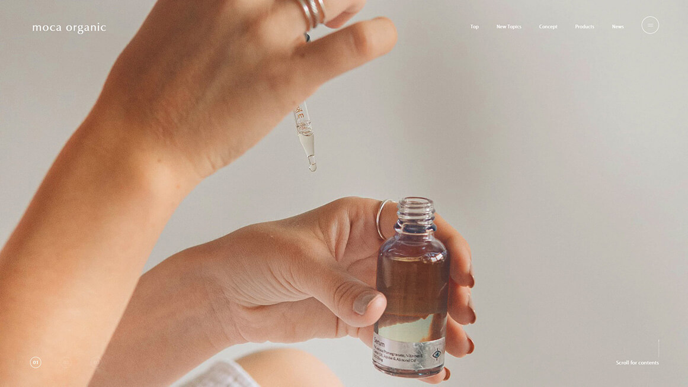
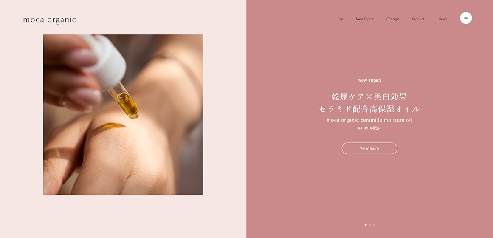
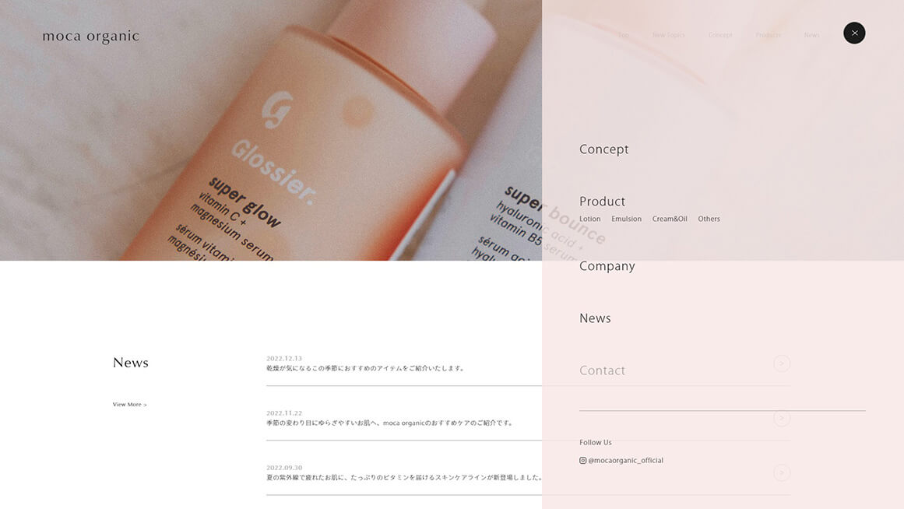

moca organic
制作期間： 3日
使用言語： HTML, CSS, jQuery
レスポンシブ： PCサイズのみ
ページ数： TOPページのみ
架空のオーガニックコスメブランドのプロダクトサイトを制作しました。
オーガニックコスメブランドが持つ柔らかい雰囲気が伝わる色合いやフォントを使用し、シンプルながらもブランドの世界観がわかるデザインにしました。



ナビゲーションとバーガーアイコンがMVを越えると色が変わる仕組みにしていますが、横からスライドする下層ページへのナビゲーションが出たときにも色が変わるデザインのため、jQueryで切り替える挙動を付けることに苦戦しました。
ちょっとしたアニメーションを色んな部分に付けたのですが、ひとつひとつが初めて実装する動きだったので作っていてとても楽しかったです。